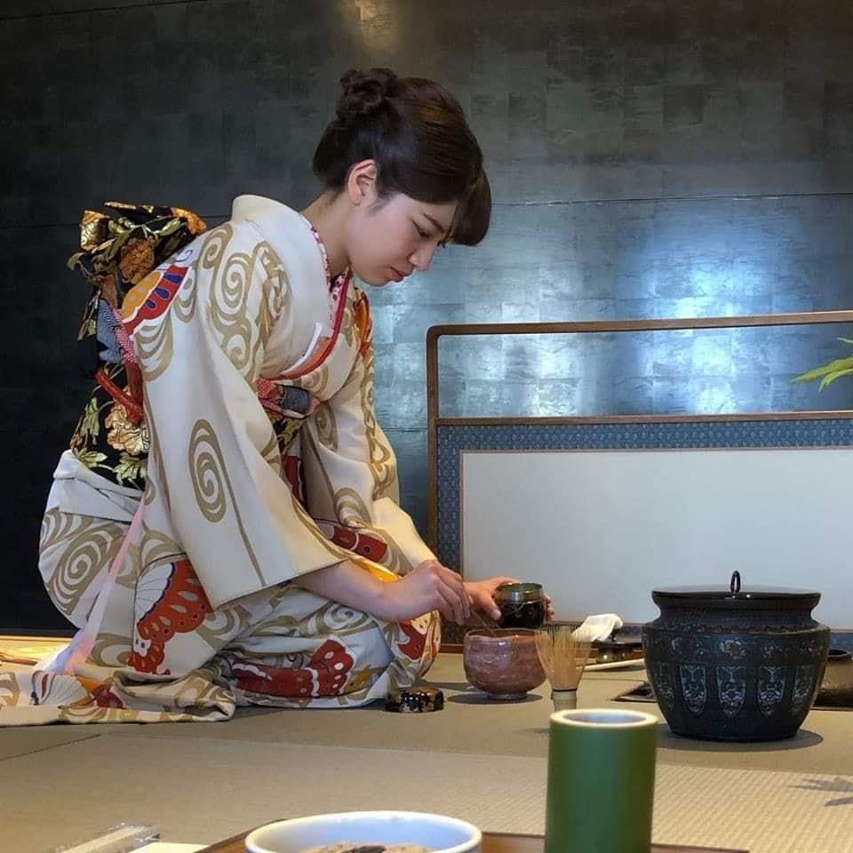

Cerimônia do Chá (茶道 - Sadō)
Embora a cerimônia do chá tenha origem na China, ela se tornou uma das experiências mais típicas da tradição japonesa
A cerimônia do chá transforma o simples ato de preparar uma bebida para uma visita em uma arte, com movimentos complexos realizados com extremo rigor, que é apreciada pelos convidados.
A cerimônia do chá (ou "o caminho do chá", traduzido literalmente) é em muitos aspectos, um microcosmo do significado tradicional japonês de omotenashi, que quer dizer como cuidar dos convidados com apreço.
A cerimônia do chá é conhecida como chanoyu, ou sado, em japonês, e a arte de preparar e servir o chá verde (matcha) em pó é chamada otemae. Os chakai são encontros informais realizados para apreciar o ritual de servir o chá, já os eventos mais formais são chamados chaji. Outra versão da cerimônia, apesar de menos comum, usa folhas de chá e é conhecida como senchado.